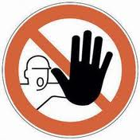
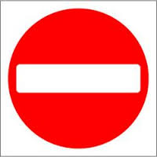
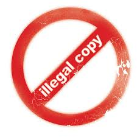
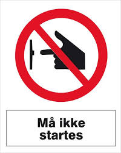

BALANSE, DELING OG EKSKLUDERING
Opphavsrett: Ment å balansere ulike rettigheter og interesser.
Nå: I økende grad et ensidig lobby-verktøy for monopolister, til
ekskludering og restriksjoner – med andre ord, vi har fått:




STOPPHAVSRETT